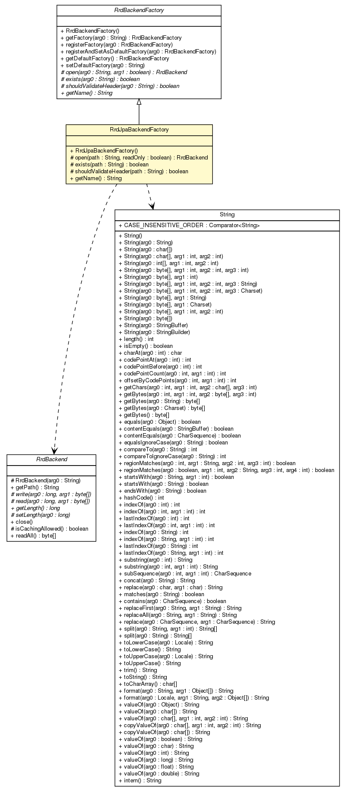

net.sereneproject.collector.rrd
Class RrdJpaBackendFactory

java.lang.Object
 org.rrd4j.core.RrdBackendFactory
net.sereneproject.collector.rrd.RrdJpaBackendFactory
org.rrd4j.core.RrdBackendFactory
net.sereneproject.collector.rrd.RrdJpaBackendFactory
@Component
public class RrdJpaBackendFactory
- extends org.rrd4j.core.RrdBackendFactory
| Methods inherited from class org.rrd4j.core.RrdBackendFactory |
getDefaultFactory, getFactory, registerAndSetAsDefaultFactory, registerFactory, setDefaultFactory |
| Methods inherited from class java.lang.Object |
clone, equals, finalize, getClass, hashCode, notify, notifyAll, toString, wait, wait, wait |
RrdJpaBackendFactory
public RrdJpaBackendFactory()
open
protected org.rrd4j.core.RrdBackend open(String path,
boolean readOnly)
throws IOException
- Specified by:
open in class org.rrd4j.core.RrdBackendFactory
- Throws:
IOException
exists
protected boolean exists(String path)
throws IOException
- Specified by:
exists in class org.rrd4j.core.RrdBackendFactory
- Throws:
IOException
shouldValidateHeader
protected boolean shouldValidateHeader(String path)
throws IOException
- Specified by:
shouldValidateHeader in class org.rrd4j.core.RrdBackendFactory
- Throws:
IOException
getName
public String getName()
- Specified by:
getName in class org.rrd4j.core.RrdBackendFactory
Copyright © 2012 Serene Project. All Rights Reserved.